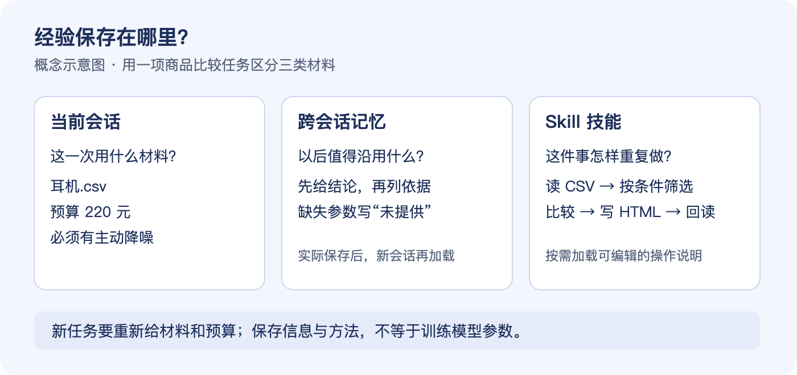
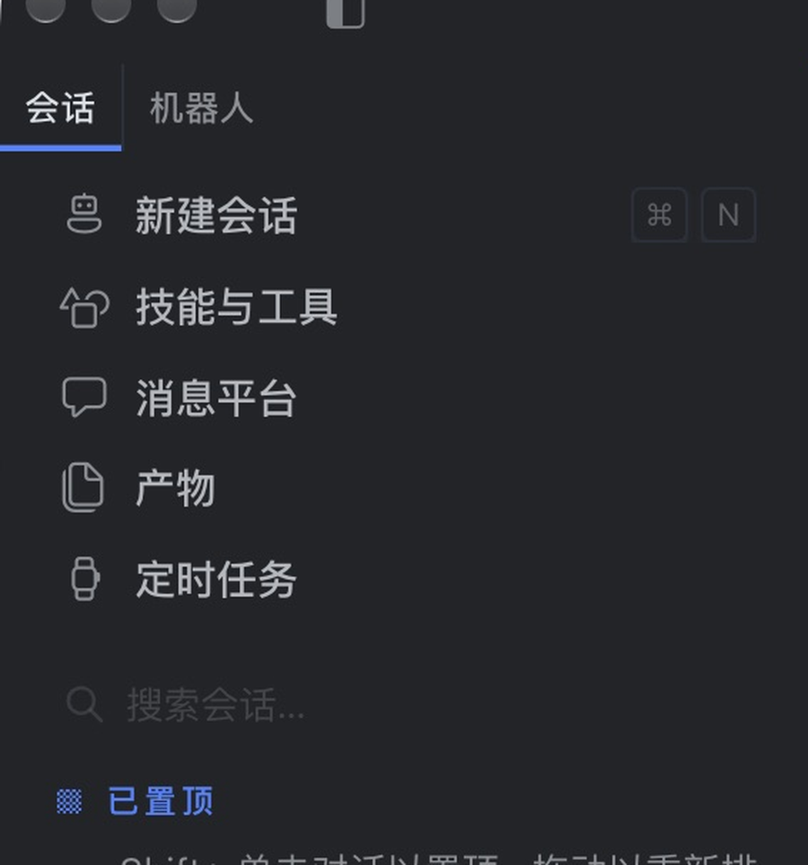
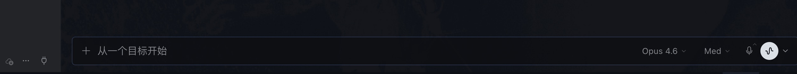
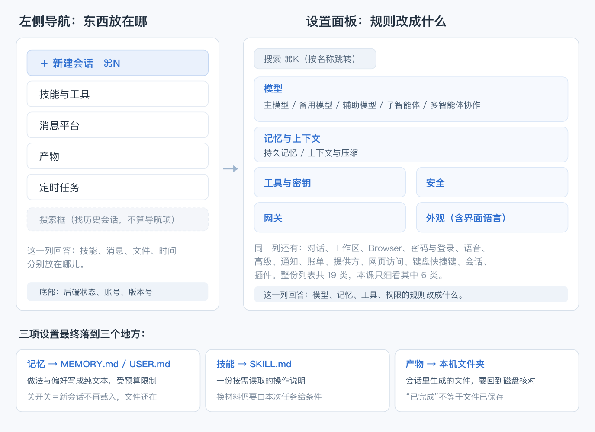
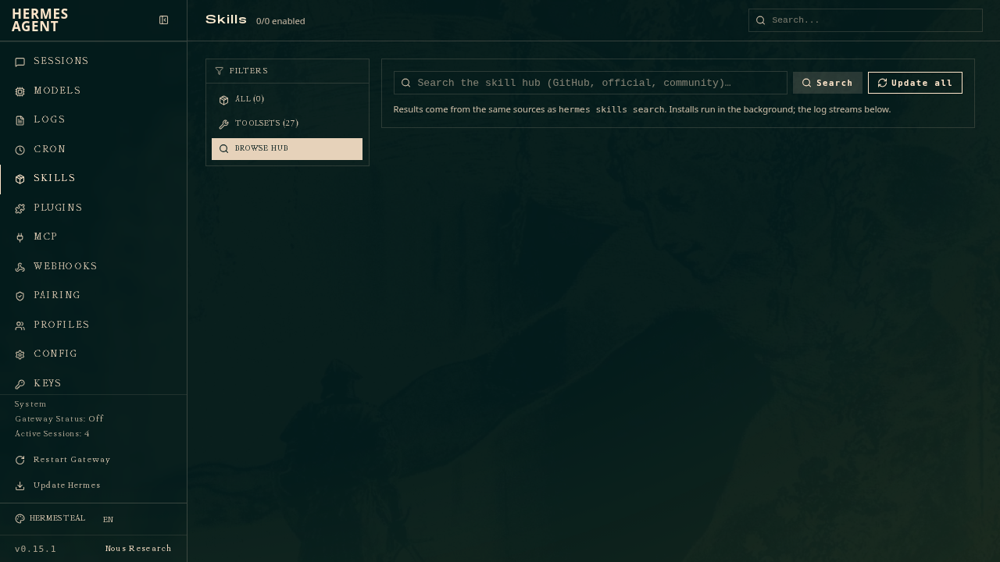
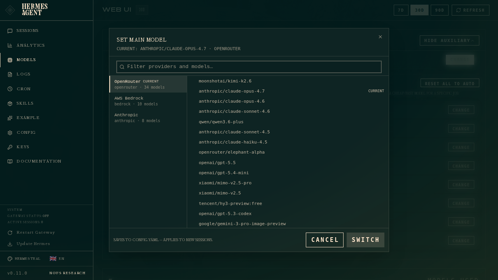

AIGC应用与实践 · 第27次课 · 扩展课
Hermes Agent：核心优势、两种界面与它能做什么
第8次课做过 Skill，第25次课用终端装了 Ollama，第26次课交了综合作品。三件事背后是同一批东西：用哪个模型、开了哪些工具、记住了什么。它们平时散在不同软件和文件里，看不见。这一课看 Nous Research 的 Hermes Agent：它凭什么值得单独讲、命令行和桌面端两种长相差在哪、多出来的功能能干什么，最后把桌面端一页页看过去。
00 知识回顾
| 做过的事 | 当时东西放在哪 | 本课要看的位置 |
|---|---|---|
| 第8次课 Skill | 一段写下来的做法，下次照着执行 | 技能与工具、SKILL.md |
| 第25次课 Ollama | 终端里 ollama pull、ollama run，模型跑在本机 |
设置 › 模型 › 提供方 |
| 第26次课综合作品 | 材料、提示词、规则、成品，散在文件夹和对话里 | 产物、记忆与上下文 |
共同麻烦是：做完一件事要同时记住四五个地方，模型换没换、工具开没开、经验还在不在、文件存哪了，每项都得单独确认。桌面端把同一批配置放进左栏和设置列表，一屏能看到全貌。
本课边界：
- 不装新软件，不再配环境——第25次课已经做过一轮。
- 不发任务、不对话。机器不一定接通模型；看界面结构不需要模型回话，点开设置就能看完。
- 不做文件成品，产出是一张半页纸的判断卡（见 01 节）。
01 本课目标
| 要带走的能力 | 用什么表现说明已经看懂 |
|---|---|
| 认位置 | 在左栏和设置列表里，指出模型、记忆、工具分别在哪一页 |
| 讲清差别 | 说出桌面端比命令行多解决了什么，又多了哪些维护工作 |
| 做判断 | 拿到一个新的 Agent 产品，用四个问题判断它适不适合自己用 |
当堂产出｜《Agent 产品选型对照卡》（半页）
| 四问 | 怎么答（二选一，写出你选的那个） |
|---|---|
| 1 谁管运行环境 | 装在我自己的机器上 / 跑在厂商的云上 |
| 2 经验存在哪 | 我电脑里的文件，我能打开改 / 存在账号里，只能在界面里看 |
| 3 我要自己维护什么 | 模型接入、后台进程、版本更新 / 都不用管，等它自己更新 |
| 4 坏了谁修 | 我自己看日志和状态 / 提工单等回复 |
再加两行：
- 一条证据：写一条界面上真实看到的具体项，别人照着能核对。例：
设置 › 记忆与上下文 › 持久记忆，记忆预算 2200，画像预算 1375。 - 一句推荐：说清推荐给谁、不推荐给谁。例：推荐给要在自己电脑上跑模型、愿意查日志的同学；只想快点做完文档的不推荐。
合格标准
三样齐全就算完成：
- 四问都答：每问写明选哪一边，不写"都行""看情况"。
- 证据指得到：写到具体页面、具体文字或数字，别人照着能核对。
- 推荐有对象：同时说出适合谁、不适合谁。
机器没接通模型时，用课件里的截图完成，证据写成"第几张图里看到什么"。
02 基础概念
1｜核心优势：它和网页版 AI 差在哪
Hermes Agent 是 Nous Research 开源的智能体软件，装在自己的电脑上。和网页版 AI 比，差别是三条：
能动手。 给它一个目标，它调用工具去读文件、跑命令、写结果，不停在"给你一段建议"。
经验存成本机文件。 记忆是 MEMORY.md（做法与事实）和 USER.md（偏好），技能是 SKILL.md；都是纯文本，能打开、能改、能放进 Git 留版本。
四个入口共用一套配置。 命令行、桌面端、浏览器管理面板、消息网关读同一份记忆和技能，换入口不用重建方法。

图解：会话保留这一次的材料，记忆保留值得沿用的信息，技能保留可再次执行的方法。三者都不修改模型参数。
软件负责执行，模型负责想。 换模型只换"想的人"，读写文件仍由软件做。模型可能跑在云端，发出去的文字仍会离开本机——这条算代价，04 节展开。
2｜CLI 与桌面端：两种长相，一套配置
命令行长这样。 终端输入 hermes 就进去，界面是纯文字，一条命令一个动作。下面是本机执行 hermes status 的实际输出：
┌─────────────────────────────────────────────────────────┐
│ ☤ Hermes Agent Status │
└─────────────────────────────────────────────────────────┘
Model: anthropic/claude-opus-4.6
Provider: Auto
Gateway: ✓ running
Platforms: none configured
Jobs: 0
版本行：Hermes Agent v0.22.6 (2026.9.24) · stable · local f0d94882e89a。这四行就把"接的谁、网关活没活、有没有在跑的任务"说完了——命令行不摆界面，只报状态。
桌面端长这样。 同一个软件打开后：

图解：整窗全貌（v0.22.6，简体中文、深色主题）。左上两个分组标签「会话」「机器人」，下面是导航项、搜索框、历史会话；右侧会话区；左下角后端状态；右下角版本号。
同一个东西，两种摆法：
| 命令行 CLI | 桌面端 GUI | |
|---|---|---|
| 界面 | 纯文字，靠记命令和参数 | 图形界面，靠点击和表单 |
| 怎么进 | 终端输入 hermes |
打开应用图标 |
| 看状态 | hermes status、hermes doctor |
左下角「后端 就绪」 |
| 改配置 | hermes config set ... |
设置 › 19 类 |
| 强项 | 能写进脚本、能看每一行工具返回 | 一眼看全貌、找得到入口、方便讲给别人听 |
两种输入位置，混了会"输了没反应"：
| 输入位置 | 输什么 | 用来做什么 |
|---|---|---|
| 系统终端 | hermes、hermes doctor、hermes model |
启动、查环境、改配置 |
| 桌面端输入框 | 中文说明材料、条件、要保存的文件 | 让 Agent 执行任务 |
| 桌面端输入框 | /help、/tools、/new |
查帮助、看工具、新建会话 |
另外两个入口一句话带过：hermes dashboard 在本机开一个浏览器管理面板，hermes gateway 起消息网关让手机也能派任务，读的都是同一份配置。
3｜新功能与它擅长的任务
v0.22.6 在"能对话"之外，有一批"能长期跑"的功能：
| 功能 | 命令行 | 桌面端 | 解决什么 |
|---|---|---|---|
| 定时任务 | hermes cron |
左栏「定时任务」 | 到点自动跑，不用守着 |
| 消息网关 | hermes gateway |
左栏「消息平台」 | 从消息应用派任务、把结果投回去 |
| 产物 | 会话中写入文件 | 左栏「产物」 | 集中看生成的文件 |
| 多模型分工 | hermes moa |
设置 › 模型 › 多智能体协作 | 几个模型分工做一件事 |
| 备用模型 | hermes fallback |
设置 › 模型 › 备用模型 | 主模型失败时自动接上 |
| 项目工作区 | hermes project |
设置 › 工作区 | 多个文件夹当一个项目用 |
| 钩子 | hermes hooks |
设置 › 高级 | 命令前后自动执行脚本 |
| 安全审计 | hermes security |
命令行 | 查依赖和插件的已知漏洞 |
| 审批白名单 | hermes approvals |
设置 › 安全 | 常用授权记一次，少点确认 |
它擅长的四类任务：
- 多文件整理：批量改名、按内容归类、汇总成表——要读写本机文件。
- 定时活：每天巡检、每周汇总、到点发消息——定时任务加消息网关。
- 换模型对比、接本地模型：同一个任务换模型跑，或接第25次课那种本机模型。
- 要留痕的流程：用了哪个技能、改了哪个文件、跑过什么命令——记忆和技能是文件，钩子能记日志。
不必用它的：问一句就答、写一段文案、做一张图——网页版或专用工具更快。
下面把桌面端一页页看过去。
附｜几个会说到的词
| 词 | 在这里指什么 |
|---|---|
| API Key | 一串凭证，代表"你是哪个账号、能用多少额度"。相当于门禁卡 |
| Base URL | 模型服务的地址，告诉软件把请求发到哪台服务器 |
| 上下文窗口 | 一次对话最多能装多少 token（字词的最小单位）；超了要压缩或截断 |
auto |
自动：让软件在当前可用的服务里自己挑一个 |
| 辅助模型 | 干杂活的小模型，负责起标题、写摘要这类不需要深度思考的事 |
| 子智能体 | 同时跑几个小任务时，那些小任务用哪个模型 |
| 推理档位 | 让模型想多久。档位越高，同样的任务越慢、消耗越多 |
03 桌面端导览
只需记住三个位置——模型、记忆、工具在哪；其余十六项知道大概在哪、会用搜索框找到就够。
左栏｜东西放在哪

图解：标签「会话」下依次是新建会话（⌘N）、技能与工具、消息平台、产物、定时任务，再往下是「搜索会话…」。技能、消息、文件、时间各归一处。
输入条放大｜模型和档位就在手边

图解：占位文字「＋ 从一个目标开始」；右侧模型名 Opus 4.6、推理档位 Med、麦克风、语音。换模型不必进设置，点开下拉即可临时切换，但只影响当前对话，不改主模型默认值。
五个功能区分别管什么
左栏四个条目，加右上角齿轮打开的设置，共五处：
| 功能区 | 打开后能做什么 | 命令行对应 |
|---|---|---|
| 技能与工具 | 查看已装技能、管理工具集与启用状态 | /skills、/tools |
| 消息平台 | 接入消息应用、配对会话、看连接状态 | hermes gateway setup |
| 产物 | 集中查看会话里生成的文件 | 会话中的文件写入 |
| 定时任务 | 设置按时间触发的任务、看运行记录 | 定时任务配置 |
| 设置 | 十九类配置集中在一处 | 各条 hermes config 命令 |
"新建会话 ⌘N"和"搜索会话"是操作，不是存放东西的地方，不数进来。
设置的 19 类｜一屏看到全部配置

图解：设置分类共 19 类：模型、对话、外观、工作区、安全、Browser、密码与登录、记忆与上下文、语音、高级、通知、账单、提供方、网关、网页访问、键盘快捷键、工具与密钥、会话、插件。顶部是搜索框 ⌘K，按名称直达。
找不到某项时不要一层层翻，先在 ⌘K 里搜，例如"记忆""语言""密钥"。
必须记住的 3 处，其余 16 项知道在哪就行：
| 记住 | 在哪 | 为什么是它 |
|---|---|---|
| 模型 | 模型 › 主模型 | 决定回答质量、速度、花谁的钱 |
| 记忆 | 记忆与上下文 › 持久记忆 | 决定"它还记不记得你" |
| 工具 | 工具与密钥 | 决定"能不能读文件、能不能联网" |
模型页｜四个字段与四个替身

图解：顶部说明"应用于新会话，可在输入框的模型选择器中临时切换当前对话"。字段是提供方 auto、模型（按钮「设置 提供方」）、推理 中、上下文窗口 0，附一行说明："仅覆盖主聊天模型检测到的上下文窗口（以 token 计）。保持为 0 则使用所选模型检测到的值。不影响辅助模型/MoA 模型。"
| 项 | 图中的值 | 它决定什么 |
|---|---|---|
| 提供方 | auto |
由软件在当前可用的服务里挑；接了自己的服务商时可指定 |
| 模型 | 设置提供方 | 新会话默认用哪个模型 |
| 推理 | 中 |
想得多还是想得快。档位越高越慢、消耗越多 |
| 上下文窗口 | 0 |
为 0 就用模型自己检测的值，只在需要覆盖时才填 |
同组还有四项替身：备用模型在主模型失败时接上；辅助模型处理起标题、写摘要这类小任务；子智能体决定并行小任务用哪个模型；多智能体协作决定多个模型怎么分活。它们不改回答风格，改的是"出错时断不断"和"小任务花谁的钱"。
图中的服务商、模型名和数值会随机器与账号不同（这里是 Opus 4.6、推理 中、记忆预算 2200）。要看的是字段位置和含义，不照抄具体值。
记忆页｜开关、预算与内置层

图解：面包屑是「设置 › 记忆与上下文 › 持久记忆」。顶部"已选记忆提供方：无一 — 仅内置记忆"；内置层说明 MEMORY.md 和 USER.md 是 Hermes 自己的记忆，独立于外部提供方，默认都载入会话，可用开关分别关闭。往下是持久记忆和用户画像两个开关（图中都开着），记忆预算 2200、画像预算 1375。
预算决定"能留多少字"，不是"记得多准"。预算小只能留最要紧的偏好；写满后新内容挤掉旧内容，重要的条目不主动清理就会丢。要更长的记忆可以接外部记忆提供方，涉及数据去向和费用，本课不展开。
同组还有"上下文与压缩"，管单次对话太长时怎么压缩前文。记忆管跨会话留什么，上下文管这一次留多长。
语言与外观｜界面中文来自语言包
界面中文是官方语言包翻译的静态文字，模型回答、工具输出和日志不会因此全变中文。设置 › 外观 可改界面语言，命令行等价做法：
hermes config set display.language zh
要让助手用中文回答，还要在提示里明确"默认使用简体中文回答"。
工具与密钥｜在哪开，在哪关
「工具与密钥」管工具集和密钥，「安全」管权限边界，常一起看：工具开了但权限被卡，表现为"命令跑了但读不到文件"。命令行对应 hermes tools。任务里出现"没有这个工具"时，先回这里确认开关，不要反复重装。
这一页认两个分组就够：工具集和密钥。密钥只在本机设置窗口里输入，不写进提示词、不投屏、不截图。
功能区与设置的落点｜结构示意

图解：概念示意，不是实机画面。左列是"东西放在哪"，右列是"规则改成什么"，下方三张卡片是设置的最终落点：记忆落到 MEMORY.md／USER.md，技能落到 SKILL.md，产物落到本机文件夹。
官方文档里的两个页面

图解：官方文档中的管理面板示例。Skills 页面可查找、浏览技能库，图中列表为空。桌面端「技能与工具」是同一件事的另一个入口。

图解：左选提供方，右选具体模型，右下角 Switch 确认。列表里能看到模型名，不等于已经接通账号或拿到额度。
04 对比与边界
先回头看一眼自己的综合作品
第26次课的综合作品里已经用过这四样东西，只是当时藏在别处：
| 综合作品里的东西 | 在 Hermes 里对应哪一页 | 差别在哪 |
|---|---|---|
| 选的模型 | 模型 › 主模型 | 当时在对话框里选，这里是默认值，新会话都按它走 |
| 用过的 Skill | 技能与工具、SKILL.md |
当时照着手册做，这里能看到文件本身和开关 |
| 让助手记住的偏好 | 记忆与上下文 › 持久记忆 | 当时靠反复交代，这里是两个数字管字数 |
| 交上去的文件 | 产物 | 当时自己翻文件夹，这里是集中列表 |
不是学新软件，是把做过的事换个角度再看一遍。
与 WorkBuddy 放在一起比
| 比较方面 | Hermes Agent | WorkBuddy |
|---|---|---|
| 产品与部署 | 源码开放，可自行修改并部署到自己的电脑或服务器 | 桌面工作台加配套服务，安装即用 |
| 界面组织 | 桌面端、命令行、管理面板、消息网关四个入口共用一份配置 | 桌面工作台加账号体系里的助理与连接器 |
| 经验存放 | 记忆与技能是本机纯文本文件，可打开、可编辑、可纳入版本管理 | 通过界面组织文件任务、专家与连接器，配置在客户端与账号里 |
| 需要承担 | 模型接入、进程、权限、更新都要自己维护 | 遵循客户端与云服务的账号、功能和运行条件 |
| 坏了怎么查 | 看日志、看左下角后端状态、跑 hermes doctor |
看界面报错与提示，必要时找客服 |
两边定位不同，不是谁替代谁：一个把控制权交出来，一个把维护工作接过去。
三个代价
模型要自己接。 网页聊天账号不等于 API 账号，装好软件不会自动获得免费模型。要准备 API Key、额度和 Base URL，否则界面能打开，任务发不出去。
维护要自己来。 版本更新、依赖、权限、后台进程、定时任务是否还在跑，都得自己盯。左下角的状态只是让问题更容易被发现。
界面还在快速变化。 按钮名称、分组顺序、默认值都可能变，本课截图是 v0.22.6。自己机器上不一样时按"分组—用途"去找，不要死记位置；来源不明的汉化补丁和"一键脚本"也不要随手装。
四问判断卡｜换任何 Agent 产品都能用
| 问题 | 选"自己管"意味着 | 选"厂商管"意味着 |
|---|---|---|
| 谁管运行环境 | 装在自己机器上，能查能改，也要自己盯 | 打开就用，但环境不归你 |
| 经验存在哪 | 本机文件，可备份、可改、可带走 | 存在账号里，换产品就带不走 |
| 要自己维护什么 | 模型、进程、更新、权限，出问题自己排 | 基本不用管，但只能等它修 |
| 坏了谁修 | 自己看日志，能找到原因也费时间 | 提工单，修得快慢不由你 |
填成一句话就是推荐："给 ___ 用，因为 ___；不建议给 ___ 用，因为 ___。"
岗位对接｜面试里这些问题的问法
| 岗位方向 | 面试可能怎么问 | 本课能用来答的部分 |
|---|---|---|
| AI 应用实施 | "客户机器上装不上、连不通，你怎么查？" | 先看后端状态是否就绪，再看提供方与 Base URL，最后看工具开关 |
| 智能体运维 | "它昨天好好的今天不干活了，可能什么原因？" | 额度、密钥失效、后台进程掉了、工具被关，四类依次排 |
| 技术支持 | "客户问它为什么记不住上次说的偏好。" | 记忆开关是否关闭、预算是否写满、是否换了新会话 |
答这类问题不需要背产品名，需要知道配置分几层：环境层（装没装、通没通）、模型层（接的谁、够不够额度）、工具层（开没开、权限够不够）、记忆层（留没留、满没满）。这四层在哪个 Agent 产品里都成立。
实习前的三条合规提醒
- 公司电脑装软件要先问。 多数企业有软件白名单，私自装开源工具可能违反终端管理规定，尤其是会读全盘文件的 Agent 类软件。
- 涉密和客户材料不进云端模型。 模型跑在别人服务器上，发过去的文字就是出去了。判断标准不是"要不要紧"，而是"这份材料公司允不允许离开内网"。
- 个人 Key 和个人账号要分清。 用私人账号给公司干活，费用谁出、数据算谁的、离职后怎么处理都是麻烦。公司要用就走公司采购的账号。
选型判断
- 只在界面上完成日常办公、希望少折腾：继续用 WorkBuddy 更省事。
- 想研究或改造 Agent 的工作方式、要把助手放在自己管理的机器上、要看清记忆和技能存了什么：Hermes 给出的控制空间更大。
- 只是偶尔生成一两次内容：两个都不用装，直接用网页版。
这是基于产品形态的判断，不是速度或回答质量的排名。
找证据清单｜填卡时照着看
| 看什么 | 在哪看 | 什么算正常 |
|---|---|---|
| 后端是否就绪 | 主界面左下角 | 显示「后端 就绪」 |
| 当前用哪个模型 | 输入框右下角 | 模型名与档位可见，且和设置里的主模型对得上 |
| 装了哪些技能 | 技能与工具 | 列表能打开，看得出启用状态 |
| 记忆留了多少 | 设置 › 记忆与上下文 › 持久记忆 | 两个预算有数字，两个开关状态明确 |
| 界面语言是否生效 | 任一设置页 | 菜单和分组名是中文，专有名词可能仍是英文 |
| 消息平台是否连接 | 消息平台 | 能看出已连接或未连接，而不是空白页 |
这张表只用来找证据，不用逐条抄。要交的是四问卡。
05 本课总结
| 要带走的能力 | 用什么判断自己已经理解 |
|---|---|
| 认位置 | 能说出会话、技能与工具、产物、定时任务各管什么，不把设置页当成任务结果 |
| 会看设置 | 能解释主模型、工具开关、记忆预算三项改动分别影响下一次对话的哪一部分 |
| 讲清优势 | 能说出"能动手、经验是文件、入口共用配置"三条，并说出各自代价 |
| 分清界面 | 能说出 CLI 与桌面端各适合什么场景，知道两者读同一份配置 |
| 会判断 | 用四问卡评价一个没用过的 Agent 产品，并说清推荐给谁、不推荐给谁 |
收束： 桌面端的价值不是按钮好看，而是把原本藏在命令和文件里的东西摆到台面上——现在你能指出模型在哪、记忆存在哪、技能从哪来，再用命令行就不会觉得是在盲操作。
提交： 交《Agent 产品选型对照卡》，提交方式与命名要求见学习通第27次课作业说明。